O resumo da marca confirma a Geologica, o Heroicons e as duas cores principais que já estão no design system. Ele também traz elementos que faltavam: o amarelo terciário, os tons de apoio, três degradês e o padrão de formas.
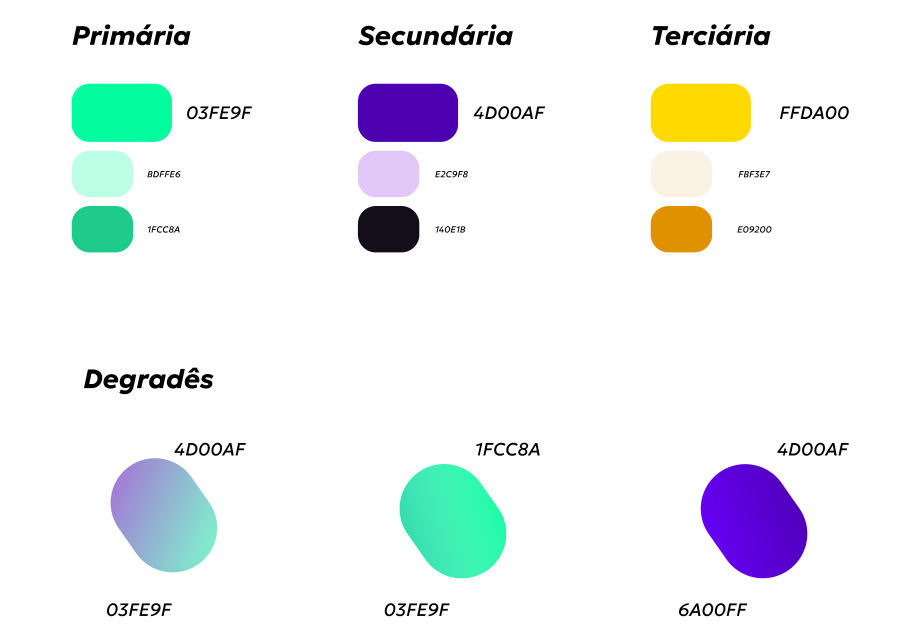
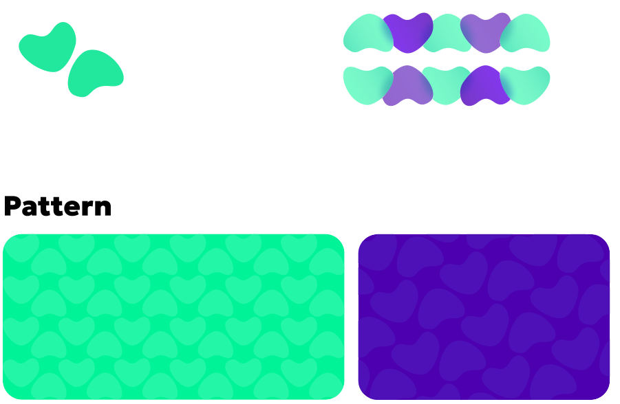
Quando o manual e o design system divergem, vence o manual. As exceções ficam marcadas, sempre por causa de contraste.
| Papel | Manual | Design system hoje | Proposta |
|---|---|---|---|
| Verde principal | #03FE9F | #03FE9F | Igual. Manter. |
| Verde claro | #BDFFE6 | #C4FFE7 | Usar #BDFFE6 como green-100 |
| Verde escuro | #1FCC8A | #00DB88 | Usar #1FCC8A como green-600, só em fundos e ilustração. Em texto ele fica em 2:1, então o texto verde segue com #007F50. |
| Roxo principal | #4D00AF | #4D00AF | Igual. Manter. |
| Roxo claro | #E2C9F8 | #E2D2FF | Usar #E2C9F8 como purple-100 |
| Quase preto | #140E1B | #1B1825 | Usar #140E1B como cor de texto principal (ink) |
| Amarelo | #FFDA00 | não existia | Novo: sun-500. Só para fundo e destaque. Nunca como cor de texto sobre branco; texto sobre ele, sempre escuro. |
| Creme | #FBF3E7 | não existia | Novo: sun-50. Fundo acolhedor para seções editoriais, como a série "cantinhos". |
| Âmbar | #E09200 | não existia | Novo: sun-700. Também serve como cor de aviso. |
| Degradê roxo | 4D00AF → 6A00FF | não existia | Novo token. A aba "Todos" do site já usa esse degradê. Corrijo a auditoria: lá estava indicado trocar, e o certo é manter, só que como token. |
| Degradê verde | 1FCC8A → 03FE9F | não existia | Novo token |
| Degradê lilás | 4D00AF → 03FE9F | não existia | Novo token. Usar só em fundos amplos e suaves, como os cards de bairro. |
| Coral do bairro | não aparece no manual | #E5483B | Está em todos os cards do Figma e do site. Proponho oficializar no manual como "cor de localização". |
Cada grupo funciona sozinho. O problema aparece quando eles se juntam: muda a proporção das pessoas, a paleta, o uso de contorno e o nível de detalhe. Para quem usa o site, cada tela parece ter sido feita por uma marca diferente.
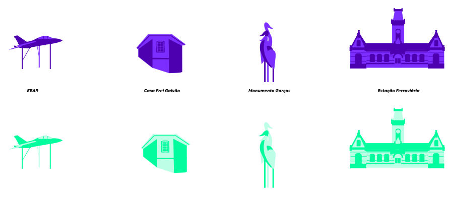
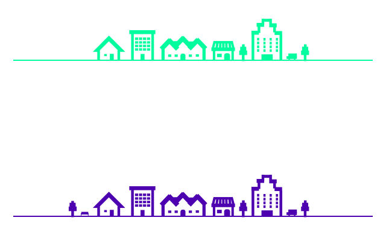
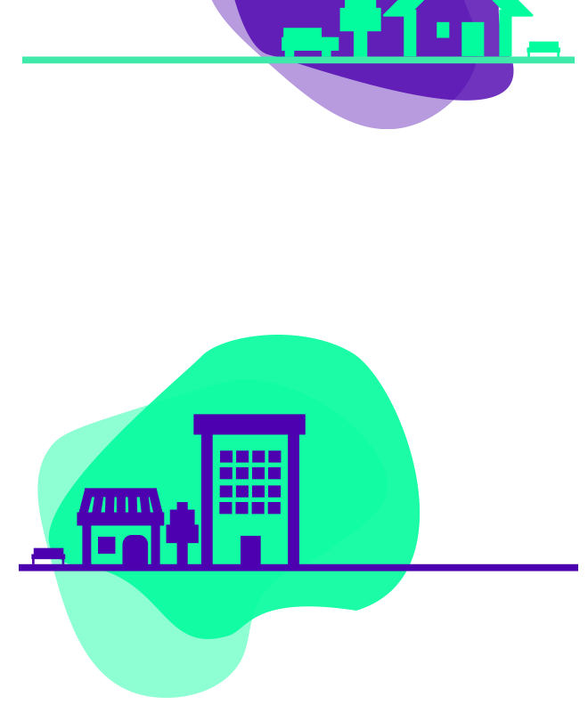
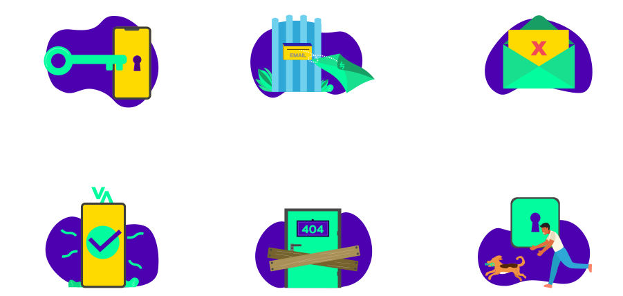
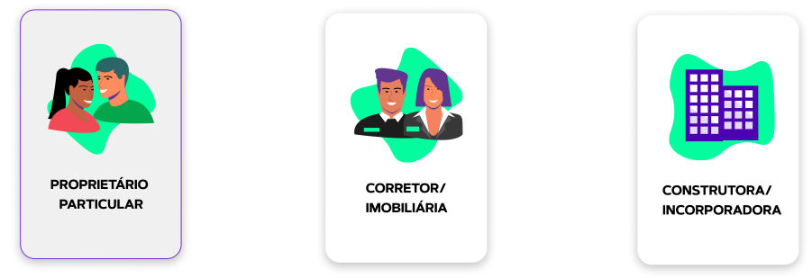
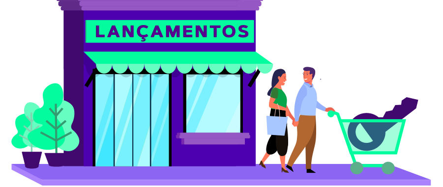
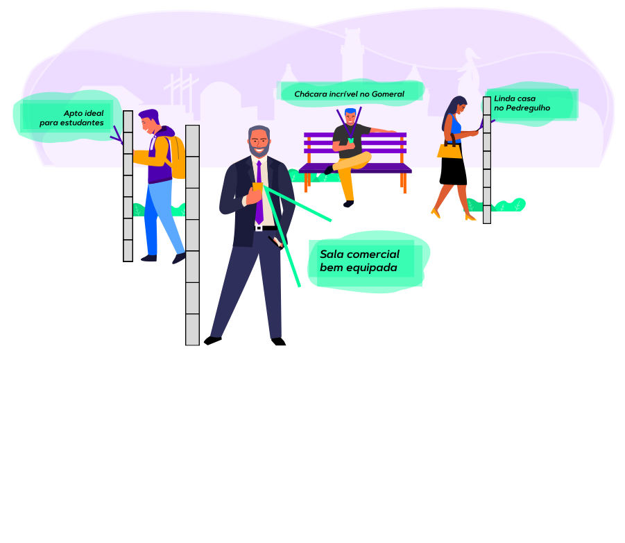
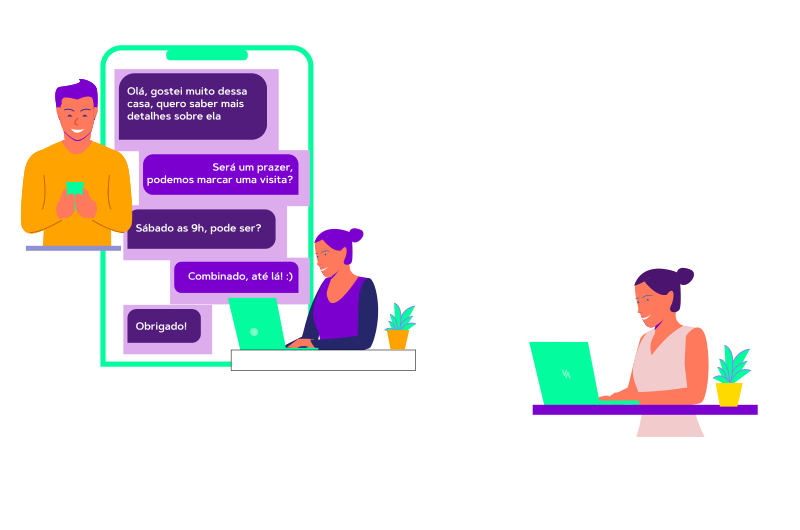
Uma linguagem só: pictograma geométrico e local (grupo D) para tudo o que é conceito, estado ou lugar, e fotografia para tudo o que envolve pessoas. As mensagens do site (grupo A) migram para essa gramática, e as cenas com pessoas (grupo C) saem conforme as telas forem refeitas.
A estrutura dos cards está boa e bate com o design system: bairro, preço, composição, título e atributos. O problema é a quantidade de versões soltas, com detalhes que variam de uma para outra.
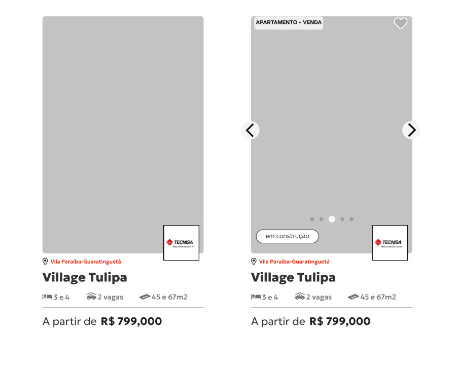
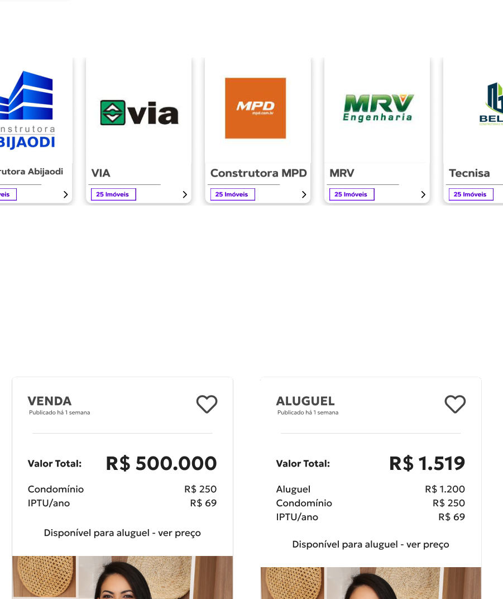
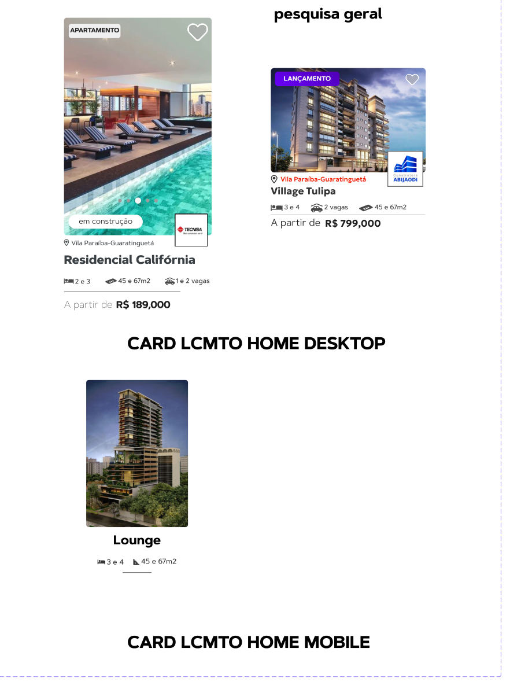
| Componente | Propriedades (variantes) | Substitui no Figma |
|---|---|---|
| Card/Imóvel | negócio venda · aluguel · layout vertical · compacto · fotos uma · carrossel · sem foto | Card home, card busca e as versões com placeholder |
| Card/Lançamento | layout vertical · horizontal · vitrine · status na planta · em obras · pronto · dispositivo desktop · mobile | As cinco versões "CARD LCMTO" |
| Card/Contato | negócio venda · aluguel · ambos (com abas) · detalhe resumido · completo · anunciante corretor · imobiliária · proprietário | As oito versões de venda e aluguel |
| Card/Anunciante | tipo corretor (foto) · imobiliária (logo) · construtora (logo) | Os cards de corretor e de construtora |
| Card/Bairro | tamanho grande · pequeno · mostrar preço médio sim · não | Os cards "Bairro Belo Bairro" e Pedregulho |
| Card/Vídeo | estado padrão · reproduzindo | O card de vídeo da home |
Os nomes de frame, como "CARD LCMTO DESKTOP PAGINA LCMTO", viram propriedades. Assim o dev enxerga um componente com opções, e não cinco telas diferentes.
Com estas três respostas, eu atualizo o design system, o tema do site e começo a parte de ilustração.
valecasa-theme.css.Análise feita a partir de CARDS.pdf, ILLUSTRATIONS.pdf e REsumo Marca ValeCasa.pdf, exportados do arquivo VALE CASA 2026 em 04/10/2026.